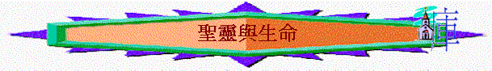

|
認
識 聖 靈 |
||
|
聖靈與真理 |
聖靈與生命 |
聖靈與能力 |
引言：「聖靈對我生命有甚麼幫助與更新？」
「何謂屬靈？屬靈與屬肉體有甚麼分別？」
「被聖靈充滿，會有甚麼表現？」
「我也要賜給你們一個新心，將新靈放在你們裡面，又從你們的肉體中除掉石心，賜給你們肉心。我必將我的靈放在你們裡面，使你們順從我的律例，謹守遵行我的典章。」結36:26-27
「因為賜生命聖靈的律，在基督耶穌裡釋放了我，使我脫離罪和死的律了。」羅8:2
〜在舊約已預言聖靈會降臨在人心中，使人的心(即或剛硬的心)也可改變，而新約也題及聖靈是與「生命」有關，的確，今天住在我們內心的聖靈能更新我們的生命，使我們的生命有豐盛的改變。
一.聖靈與重生
1.重生的重要
A.不重生不能見神的國
「耶穌回答說：「我實實在在的告訴你，人若不重生，就不能見神的國。」約3:3
B.不重生不能進神的國
「耶穌說：「我實實在在的告訴你，人若不是從水和聖靈生的，就不能進神的國。」約3:5
2.重生的意思
「從肉身生的就是肉身；從靈生的就是靈。」約3:6
「叫一切信他的都得永生（或作：叫一切信的人在他裡面得永生）。」約3:15
A.不是指肉身的再生
B.乃指從聖靈的更新
C.此生命同以往不同
D.此生命可延續永遠
3.得著的方法
「耶穌說：「我實實在在的告訴你，人若不是從水和聖靈生的，就不能進神的國。」約3:5
「摩西在曠野怎樣舉蛇，人子也必照樣被舉起來，叫一切信他的都得永生（或作：叫一切信的人在他裡面得永生）。」約3:14-15
A.悔改
〜從「水」生的，若按照約1章所題及，此水乃指「用水施洗」，指到約翰所傳的悔改之洗，目的叫人知罪悔改，所以要重生需要先悔改
B.要信
〜昔日在舊約時代(民21)，選民在走曠野路時，怨讟神，神使火蛇進入百姓中間咬他們，但摩西為眾百姓代求，神給他們一個能有「活命」的方法，就是凡被蛇咬了的，只要一望神要摩西製造的銅袉，他們就活了，他們只要單單憑信仰望被挂的銅袉，就可以得生。
〜新約一樣，苦人要得生，得著重生及永遠生命，可進神的國，只要一信就可以了!
二.聖靈與自由
「主就是那靈；主的靈在那裡，那裡就得以自由。」林後3:17
1.過往的掙扎
「我也知道在我裡頭，就是我肉體之中，沒有良善。因為，立志為善由得我，只是行出來由不得我。故此，我所願意的善，我反不做；我所不願意的惡，我倒去做。若我去做所不願意做的，就不是我做的，乃是住在我裡頭的罪做的。我覺得有個律，就是我願意為善的時候，便有惡與我同在。因為按著我裡面的意思（原文作人），我是喜歡神的律；但我覺得肢體中另有個律和我心中的律交戰，把我擄去，叫我附從那肢體中犯罪的律。我真是苦啊！誰能救我脫離這取死的身體呢？」羅7:18-24
A.被罪轄制(見下圖)
B.被死捆綁(見下圖)
〜我們沒能力、沒自由，擺脫罪與死的鎖鍊
2.聖靈的釋放
「因為賜生命聖靈的律，在基督耶穌裡釋放了我，使我脫離罪和死的律了。」羅8:2
A.脫離罪惡
B.勝過死亡
〜聖靈使我們的生命更新，使我們有力脫離罪的律，因此可免受指控，也不因罪而死!
三.聖靈與聖潔
「你們中間也有人從前是這樣；但如今你們奉主耶穌基督的名，並藉著我們神的靈，已經洗淨，成聖，稱義了。」林前6:11
「就是照父神的先見被揀選、藉著聖靈得成聖潔，以致順服耶穌基督，又蒙他血所灑的人。願恩惠、平安多多的加給你們。」彼前1:2
〜原來聖靈進入我們內心，可以使我們
1.得潔淨
2.得成聖
3.得稱義
〜即或如哥林多教會的信徒有很多軟弱的問題，但也因信得聖靈更新，在神眼中可成為義人
4.仍謹守
「你們要逃避淫行。人所犯的，無論什麼罪，都在身子以外，惟有行淫的，是得罪自己的身子。豈不知你們的身子就是聖靈的殿嗎？這聖靈是從神而來，住在你們裡頭的；並且你們不是自己的人；因為你們是重價買來的。所以，要在你們的身子上榮耀神。」林前6:18-20
〜身體是聖靈的殿，我們豈可使身體此殿不潔淨，在身子上行淫，污穢這殿呢!
四.聖靈與主愛
1.充滿主愛
「盼望不至於羞恥，因為所賜給我們的聖靈將神的愛澆灌在我們心裡。因我們還軟弱的時候，基督就按所定的日期為罪人死。為義人死，是少有的；為仁人死、或者有敢做的。」羅5:5-7
〜以前我們不明白何謂神聖的愛，不知主何等愛我們，也不曉得如何愛身邊的人，但信主後，聖靈將神的愛澆灌(pour
out)，傾倒在我們心�堙A使我們會眾聖徒稍微明白神的愛是何等長闊高深。
2.激勵行善
「但現在，我往耶路撒冷去供給聖徒。因為馬其頓和亞該亞人樂意湊出捐項給耶路撒冷聖徒中的窮人。」羅15:25-26
「弟兄們，我藉著我們主耶穌基督，又藉著聖靈的愛，勸你們與我一同竭力，為我祈求神，叫我脫離在猶太不順從的人，也叫我為耶路撒冷所辦的捐項可蒙聖徒悅納，」羅15:30-31
〜「聖靈的愛」，聖靈�堿O有愛的，此愛可以使保羅樂意將馬其頓和亞該亞人的捐項，給耶路撒冷聖徒，保羅也因此愛，藉此愛勸聖徒為他祈禱，使他可順利完成此愛的行動。
五.聖靈與喜樂
「因為神的國不在乎吃喝，只在乎公義、和平，並聖靈中的喜樂。」羅14:17
1.賜人喜樂
「並且你們在大難之中，蒙了聖靈所賜的喜樂，領受真道就效法我們，也效法了主；」帖前1:6
2.使人看見
「正當那時，耶穌被聖靈感動就歡樂，說：「父啊，天地的主，我感謝你！因為你將這些事向聰明通達人就藏起來，向嬰孩就顯出來。父啊！是的，因為你的美意本是如此。」路10:21
〜聖靈感動主，使主看見神的美意而帶出喜樂!
六.聖靈與屬靈
1.屬肉體
A.何謂屬肉體或屬血氣的人？
a.放縱肉體的情慾
「他們曾對你們說過，末世必有好譏誚的人隨從自己不敬虔的私慾而行。這就是那些引人結黨、屬乎血氣、沒有聖靈的人。」猶18-19
「我說，你們當順著聖靈而行，就不放縱肉體的情慾了。」加5:16
「情慾的事都是顯而易見的，就如姦淫、污穢、邪蕩、拜偶像、邪術、仇恨、爭競、忌恨、惱怒、結黨、分爭、異端、嫉妒（有古卷加：兇殺二字）、醉酒、荒宴等類。我從前告訴你們，現在又告訴你們，行這樣事的人必不能承受神的國。」加5:19-21
〜慾念本身是沒錯的，但放縱了，就成為罪
(1)放縱性慾----姦淫、污穢、邪蕩
(2)放縱宗教崇拜----拜偶像、邪術、異端
(3)放縱情緒----仇恨、忌恨、惱怒
(4)放縱追求成功感----嫉妒、結黨、爭競、紛爭
(5)放縱食慾----醉酒、荒宴
〜屬肉體的人，放縱神所賜本身是好的事，走歪了路！
b.體貼肉體的事情
「原來體貼肉體的，就是與神為仇；因為不服神的律法，也是不能服，」羅8:7
c.不服父神的律法
B.基督徒會否屬肉體的？
a.身份上應是屬靈的
「如果神的靈住在你們心裡，你們就不屬肉體，乃屬聖靈了。人若沒有基督的靈，就不是屬基督的。」羅8:9
b.事實上仍有屬肉體
「弟兄們，我從前對你們說話，不能把你們當作屬靈的，只得把你們當作屬肉體，在基督裡為嬰孩的。我是用奶餵你們，沒有用飯餵你們。那時你們不能吃，就是如今還是不能。你們仍是屬肉體的，因為在你們中間有嫉妒、分爭，這豈不是屬乎肉體、照著世人的樣子行嗎？有說：「我是屬保羅的」；有說：「我是屬亞波羅的。」這豈不是你們和世人一樣嗎？」林前3:1-4
〜哥林多教會應是屬靈的，但事實上，他們的表現如世人一樣，屬乎肉體，有很多嫉妒紛爭的事；所以有些基督徒按理是屬靈，但在生活上卻表現屬肉體。
C.屬肉體的後果
a.與真神為敵
「原來體貼肉體的，就是與神為仇；因為不服神的律法，也是不能服，」羅8:7
b.與聖靈相爭
「因為情慾和聖靈相爭，聖靈和情慾相爭，這兩個是彼此相敵，使你們不能做所願意做的。」加5:17
c.令聖靈擔憂
「污穢的言語一句不可出口，只要隨事說造就人的好話，叫聽見的人得益處。不要叫神的聖靈擔憂；你們原是受了他的印記，等候得贖的日子來到。」弗4:29-30
d.令聖靈嫉妒
「你們這些淫亂的人（原文作淫婦）哪，豈不知與世俗為友就是與神為敵嗎？所以凡想要與世俗為友的，就是與神為敵了。你們想經上所說是徒然的嗎？神所賜、住在我們裡面的靈，是戀愛至於嫉妒嗎？」雅4:4-5
2.屬靈
A.何謂屬靈
〜是否時常讀經、靈修，時常講屬靈的說話就是屬靈呢？
a.體貼聖靈的事
「因為隨從肉體的人體貼肉體的事，隨從聖靈的人體貼聖靈的事。」羅8:5
(1)不是肉體的事
(2)有聖靈的特質
〜真理(體貼神的話)
〜慈愛(常有主的愛)
〜聖潔(不沾染不潔)
b.順從聖靈而行
「我說，你們當順著聖靈而行，就不放縱肉體的情慾了。」加5:16
「我們若是靠聖靈得生，就當靠聖靈行事。」加5:25
〜何謂順從聖靈而行？聖靈而行的事是甚麼事？加6章有舉例題及
(1)對肢體----要挽回
「弟兄們，若有人偶然被過犯所勝，你們屬靈的人就當用溫柔的心把他挽回過來；又當自己小心，恐怕也被引誘。」加6:1
(2)對自己----要醒察
「各人應當察驗自己的行為；這樣，他所誇的就專在自己，不在別人了，」加6:4
(3)對群體----要行善
「在道理上受教的，當把一切需用的供給施教的人。不要自欺，神是輕慢不得的。人種的是什麼，收的也是什麼。順著情慾撒種的，必從情慾收敗壞；順著聖靈撒種的，必從聖靈收永生。我們行善，不可喪志；若不灰心，到了時候就要收成。所以，有了機會就當向眾人行善，向信徒一家的人更當這樣。」加6:6-10
B.帶出結果
a.結出果子
「聖靈所結的果子，就是仁愛、喜樂、和平、忍耐、恩慈、良善、信實、溫柔、節制。這樣的事沒有律法禁止。」加5:22-23
(1)有「仁愛」「恩慈」「忍耐」「溫柔」就少了仇恨、忌恨、惱怒
(2)有「和平」，就少了嫉妒、結黨、爭競、紛爭
(3)有「良善」，就少了姦淫、污穢、邪蕩
(4)有「信實」，(對信仰忠誠)，就少了拜偶像、邪術、異端
(5)有「節制」，就少了醉酒、荒宴
〜人順著聖靈，體貼聖靈，生命自然流露出與放縱肉體相反的果子
b.生命平安
「體貼肉體的，就是死；體貼聖靈的，乃是生命、平安。」羅8:6
〜此「生命」是更新的生命，得勝的性命，不受罪與死的轄制
〜「平安」不再是與神為敵，乃與神和好，聖靈在我頭也沒有相爭
c.被聖靈充滿
「不要醉酒，酒能使人放蕩；乃要被聖靈充滿。」弗5:18